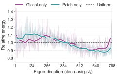

Mosaic Improving Out-of-Distribution Detection in Vision Transformers with Patch Representations
State University of New York at Binghamton
TL;DR: Existing post-hoc Out-of-distribution detectors for ViTs usually look only at the global representation. Mosaic models the geometry of patch representations to examine OOD evidence.
Framework
- PatchesThe input image is split into \(M\) patches, one token per patch.
- Frozen ViTThe tokens pass through the layers of a pre-trained vision transformer. Nothing is fine-tuned.
- Global tokenConventional detectors keep only the global token of the last layer, \(z_{\mathrm g}(x)\).
- Patch tokensThe same layer also outputs \(M\) patch tokens, each with \(D\) feature channels.
- Patch DescriptorFor every channel, keep the strongest response across all patches. The result is one patch descriptor, \(z_{\mathrm p}(x)\).
- Two scores, one sumEach descriptor is scored by its Mahalanobis distance to the nearest ID class; \(\mathcal S(x)=s_{\mathrm g}(x)+s_{\mathrm p}(x)\).
How Mosaic scores an image. Schematic with synthetic token values; click a step to jump to it.
Abstract
Out-of-distribution (OOD) detection is critical for reliable deployment of vision models in safety-sensitive applications. Existing post-hoc OOD detectors primarily rely on global representations from the penultimate layer, potentially missing complementary information encoded in local patch tokens. We model the geometry of patch representations to examine OOD evidence in vision transformers. Specifically, we introduce Mosaic, a post-hoc OOD detector that aggregates patch-token representations into an image descriptor, models its class-conditional geometry, and combines Mahalanobis distances computed in global and patch feature spaces, without modifying the pretrained backbone. Extensive experiments across architectures and pretraining objectives show that Mosaic consistently improves OOD detection, reducing average FPR95 by 4.84–4.86 percentage points over the global-feature baseline under class-balanced and long-tailed calibration, respectively.No single patch is a good detector, but patch descriptors are.
We fit a separate Mahalanobis detector at each of the 196 patch positions of ViT-B/16. Every position is far worse than the global representation. Patch descriptor pools across positions to find the extreme responses.
Each cell is one patch position. Outlined cells are the five best. Hover for values.
Individual patch vs patch descriptor for OOD detection. ViT-B/16 with ImageNet-1K as ID.
Methodology

Pool the patch tokens
Take the maximum of each feature dimension over the \(M\) layer-normalized patch tokens. A strong response survives even if it occurs in only a few patches.
Normalize and fit two Gaussian models
\(\ell_2\)-normalize the global and patch descriptors, \(z_b = f_b/\lVert f_b\rVert_2\). For each branch \(b\in\{\mathrm g,\mathrm p\}\), estimate class means and one shared covariance with Ledoit–Wolf shrinkage.
Score each branch by its nearest class
The ID confidence of a branch is the negative squared Mahalanobis distance to its closest class. The two branches may pick different classes.
Add the two scores
No learned weights and no OOD validation data. Using the global score alone gives Mahalanobis++.
The global and patch descriptors detect different OOD images
Take an OOD image and measure two distances to the nearest ID class: one from its global descriptor and one from its patch descriptor. Each detector rejects an image when its own distance is above a threshold that still accepts a chosen share of ID images. If the two detectors agreed, every point below would fall in the "both detect" or "both miss" corner. They do not.
Move the slider to change the operating point. The dashed curve is Mosaic's decision boundary: it sums the two distances, so it also rejects images that sit just inside both individual thresholds.
Share of OOD images
OOD images wrongly accepted (FPR)
Why class-conditional modeling of patch descriptor helps?

Results
The checkpoints cover ViT, DeiT, BEiT, Swin and EVA with supervised, CLIP and masked-image-modeling pretraining. Each point is one checkpoint, averaged over five OpenOOD sets (SSB-Hard, NINCO, iNaturalist, Textures, OpenImage-O). Points below the diagonal are checkpoints where Mosaic beats the selected baseline.
Change in FPR95 per checkpoint, sorted. Bars to the left are improvements.
Citation
@misc{bhuian2026mosaic,
title = {Mosaic: Improving Out-of-Distribution Detection in Vision
Transformers with Patch Representations},
author = {Bhuian, Md Tawheedul Islam and Sadiq, Md Farhan and
Hossain, Rahim and Kang, Kyoung-Don},
year = {2026},
note = {Preprint}
}